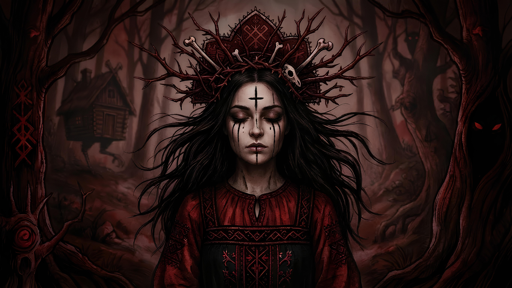

Страшные Сказки

Новый EP Cristie
Послушать
Содержание
О чем этот EP?
Это путешествие, где мы с тобой гуляем по страшному лесу, ночью. Но ты не бойся, тут не опасно.
Мы будем смотреть на разные опушки и избушки, откроем разные двери и покопаемся в чертогах наших страхов и воображения. Этот EP качает нас на волне и накрывает в конце.
С чего начать?
Twins
Мы начинаем с Twins.
Знакомая вам песня, но о чем она?
Мы видим Кристину, она жертва, но это не просто трек про раздвоение личности. Он про рождение зла, про девочку, которая не выбирала, ей просто не повезло, ее просто сломало.
Ее психика сломалась и адаптировалась. Она создала Алису, сильную, кровожадную, без страха и полную ненависти и мести. Ее главная миссия - защищать невинную Кристину, она тот самый невидимый щит, который никогда не отпустит контроль.
0:00
0:00
Тихий лес
Но у любой стороны две медали, и мы переходим к треку Тихий лес. Он тоже вам уже знаком.
Да, это продолжение, и оно вроде как шутка? Сама песня довольно позитивная. Это фантазия, когда встретились две хищные рыбы, но одна крупнее, страшнее, мрачнее. Тут мы видим не просто безумную Кристину и Алису, вы видим что даже зло в этом мире, может быть на стороне добра.
И отсюда вопрос, а зло ли Кристина? И был ли у нее выбор?
0:00
0:00
Страшные сказки
Плывём дальше..
Трек страшные сказки..
Я уже писала, что меня в детстве не вставлял Дисней, принцессы, принцы..
А кто были прародители этих сказок?
Ведь даже в Диснеевских мультиках есть вопросы. Почему принц не запомнил Золушку? Почему спящая красавица проснулась от поцелуя и поняла что он тот самый? А русалочка, которая отдала голос? Даже не зная какой он? Какие это показывает ценности? Вопросики..
Тут мы окунемся в оригиналы и там правда крови - литры, без цензуры, без прикрас..
0:00
0:00
Театр
Теперь по плану у нас реальность, театр..
Этот трек намеренно состарен вначале, начало играет с виниловой пластинки, пыльной, поцарапанной. А что если человек и при жизни может быть монстром? Мы окунемся в мир алчной, безумно красивой, хитрой, холодной как лёд и острой как сталь актрисы театра.
Она любила разрушать жизни, получала от этого истинное удовольствие, это был не просто выбор, это был вкус ее жизни.
Но она забыла, что за все приходиться платить, и цена будет очень высока.
Но остаётся вопрос, а стала ли она монстром? Стало ли это ее наказанием?
Справедливо?
0:00
0:00
Пороки
Пороки. Самый темный трек альбома.
Он накрывает нас волной и отсюда нет выхода. Мы можем только задержать дыхание и надеятся что мы выплывем.
Этот трек я написала когда снова увидела памятник - Дети - жертвы пороков взрослых.
Тот самый, мрачный на Болотной площади.
Он отражает наши грехи и неидеальность этого мира. Его отражение страшнее любых сказок, ведь это реальность, наша реальность.
Монстры живут не только в камне, но и внутри нас..
И только мы делаем выбор - быть монстром или нет?
0:00
0:00
Заключение
Этот EP имеет весёлый фасад и мрачный смысл. Он напоминает нам о том, что мир это шахматная доска, а мы фигуры и правила меняются каждый день. И только ты выбираешь - чёрное или белое?
Только мы можем сделать этот мир лучше.
Да, это экспериментальный EP.
Это часть того как я вижу мир.
Не всегда мрачно, нет, но это одна из призм.
И моя миссия остаётся прежней - нивелировать зло, даже если это невозможно. Через слова, стихи, поддержку, музыку.